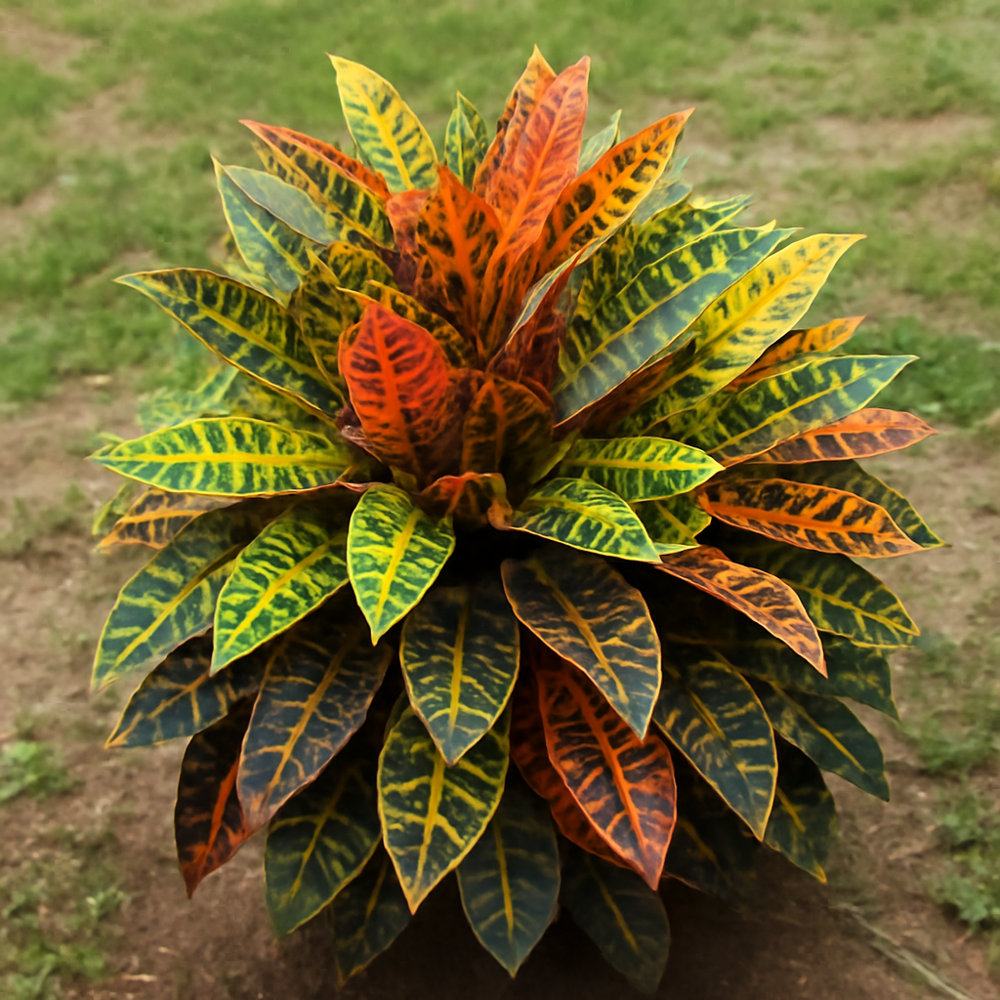

Family: Euphorbiaceae
Genus: Codiaeum
Species: C. variegatum
Native to Southeast Asia and the Pacific Islands, widely cultivated in tropical and subtropical regions worldwide.
Grows best in warm, humid environments with consistent temperatures and protection from cold drafts.
Commonly used for landscaping, decorative pots, indoor décor, and tropical garden designs due to colorful foliage.
Primarily valued as a decorative plant; in some regions used in cultural landscaping and aesthetic gardening.
Enhances visual appeal of spaces, contributes to indoor greenery, and improves overall ambiance in homes and offices.